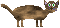

You won the game. The cat needs to rest after all that strenuous jumping.

Made by 384.cz in 2023.
Replay
reset
A new queen has ascended the throne of the country.
But where all the family wealth was stored, the new queen's parents took to their grave
You're her cat, trying to find your parents' treasure.
You'll face various obstacles along the way.
Controls: left screen tap: change direction to left,
middle screen tap: jump,
right screen tap: change direction to right,
or you can use WASD
Tip: You can kill archers & catapults by touching them,
you can set respawn point by touching the scepter, the respawn point is saved permanently.

PLAY
reset